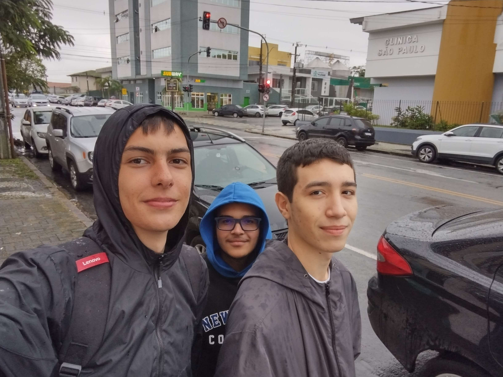

KG Music
Nosso pessoal:

O projeto KG music foi feito baseado em um cliente e usuários criados pelos participantes do grupo com base nos aplicativos que usamos, e nas necessidades do nosso dia a dia, levando em conta o que achamos positivo e o que achamos negativo. Assim juntando todos esses pontos para tirar o nosso "aplicativo" do papel e colocá-lo em prática.